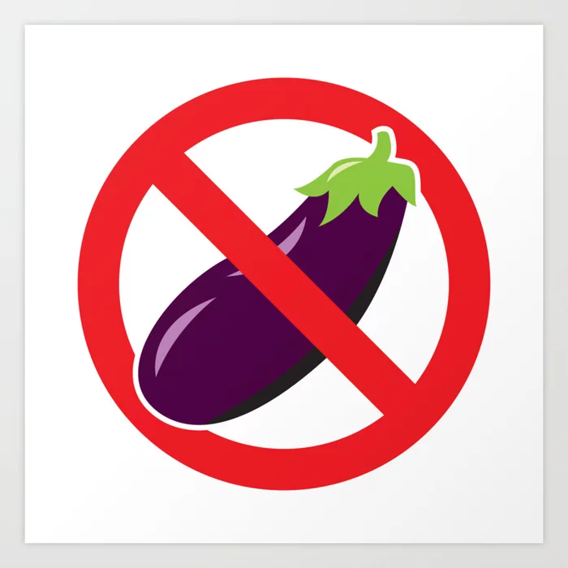

Périodes tranquilles

Périodes risquées
Période d'ovulation (très risqué)
Conçu spécialement pour vous aider à déterminer les périodes où vous pouvez avoir des rapports sans risque de grossesse, sans utiliser de contraception. Suivez simplement les étapes pour connaître les jours où vous pouvez être tranquille.
Le cycle se calcule entre les deux dernières règles. Demande à ta femme quand elle a eu ses dernières règles. Le nombre de jours entre ces deux dates correspond à la durée de son cycle.
Périodes tranquilles
Périodes risquées
Période d'ovulation (très risqué)